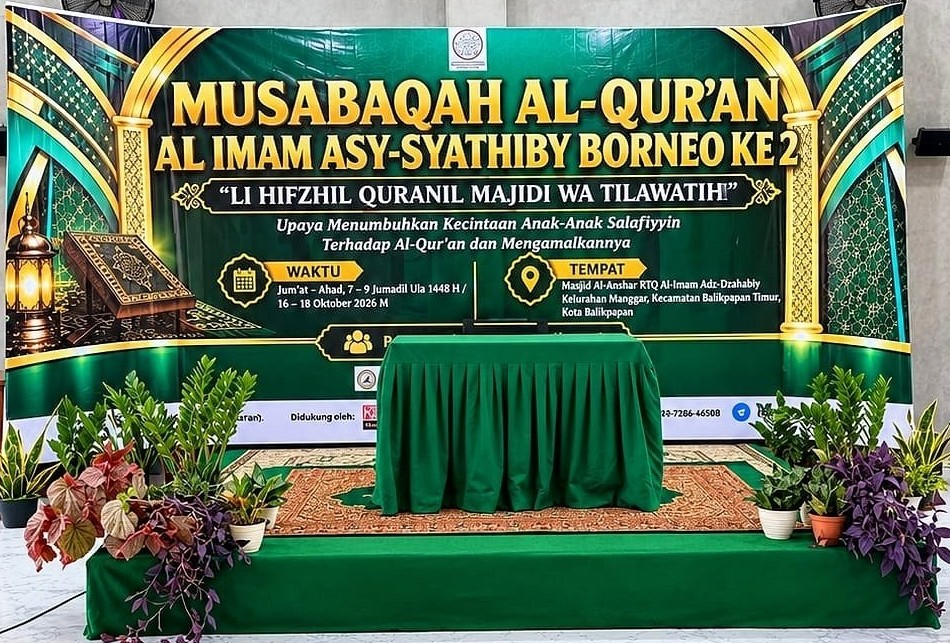
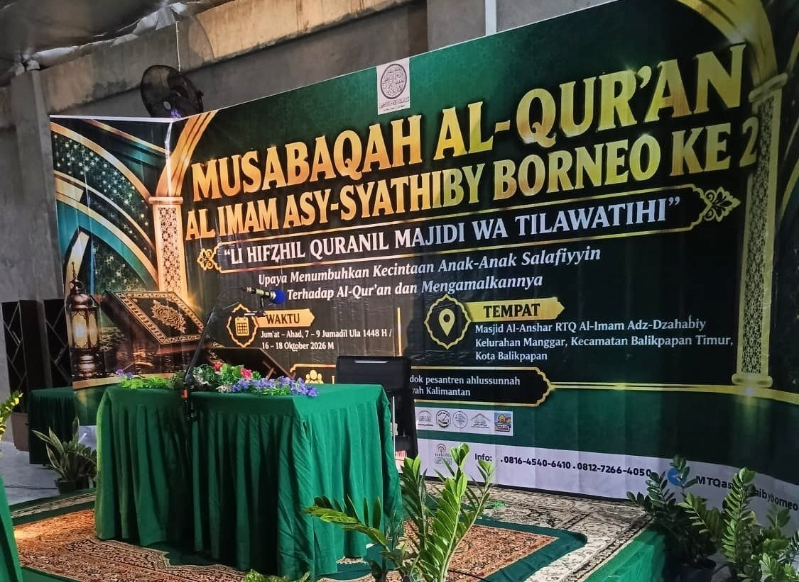
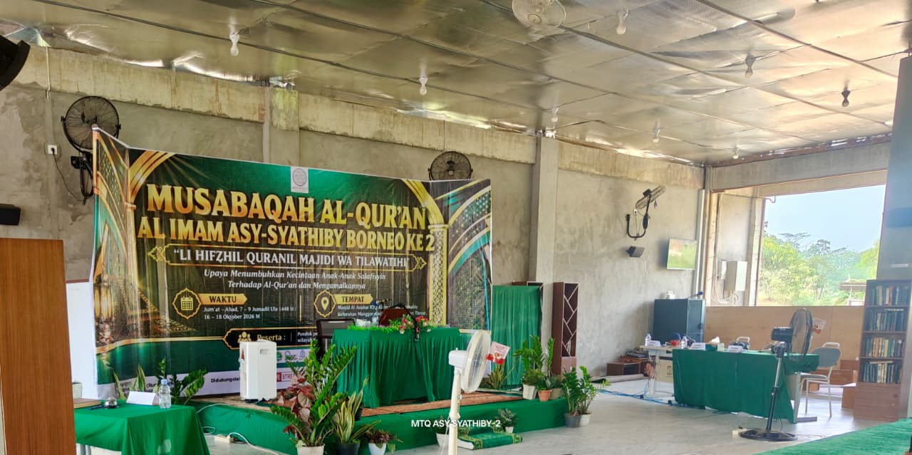
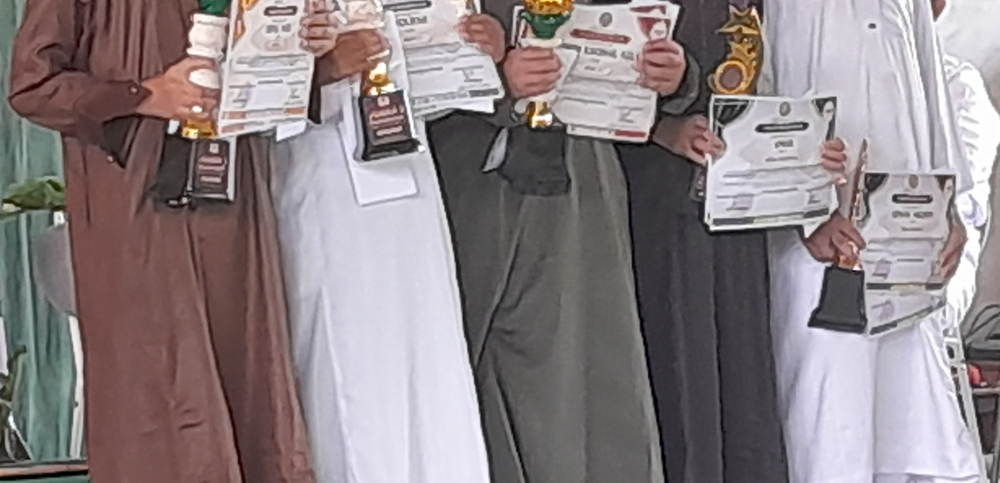
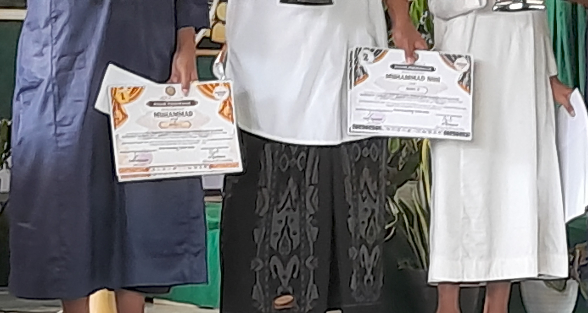
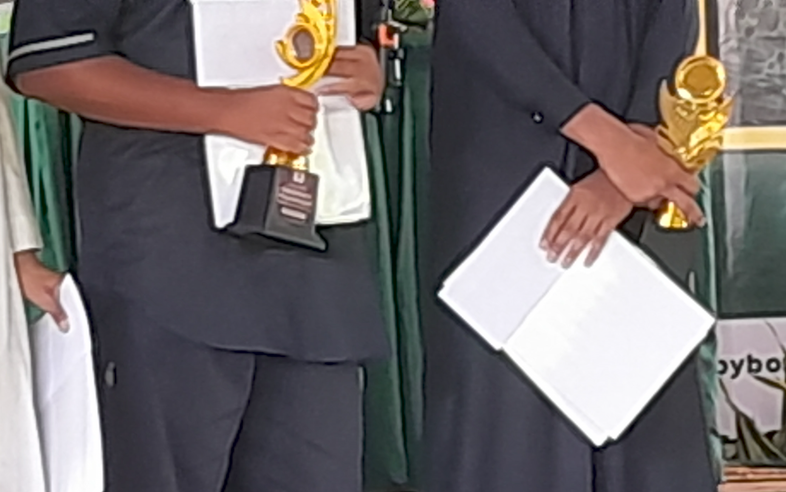
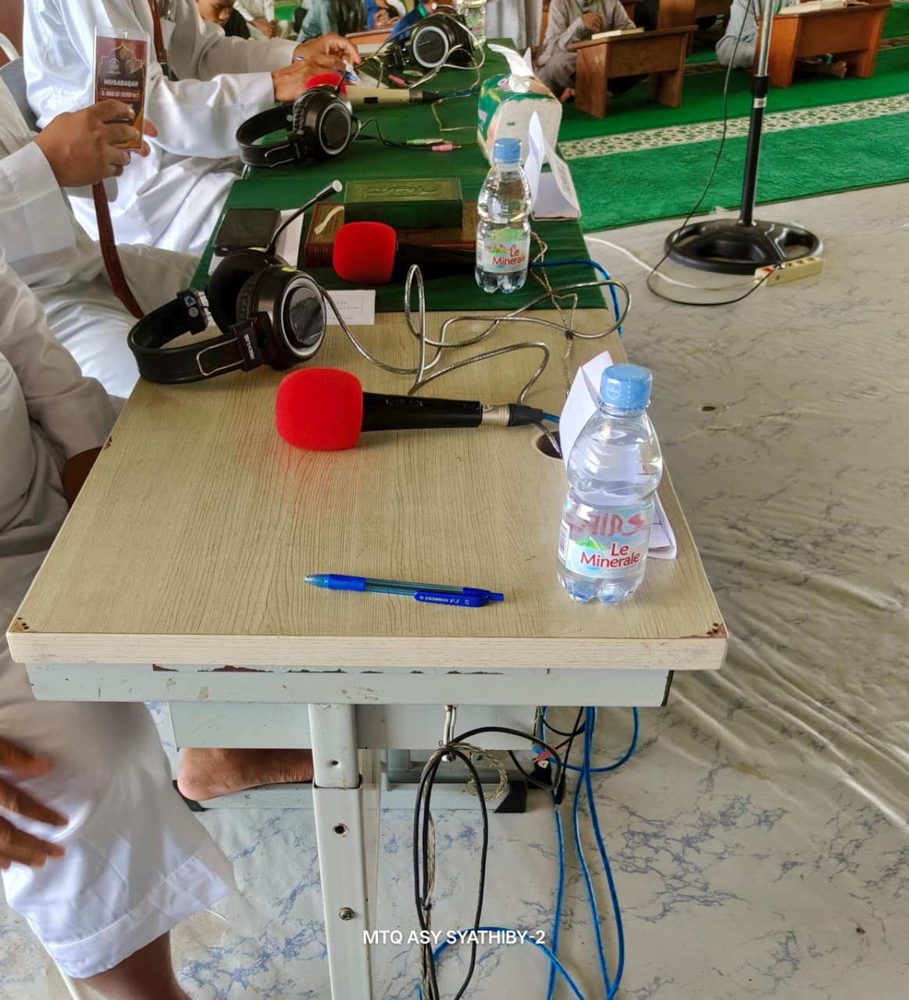
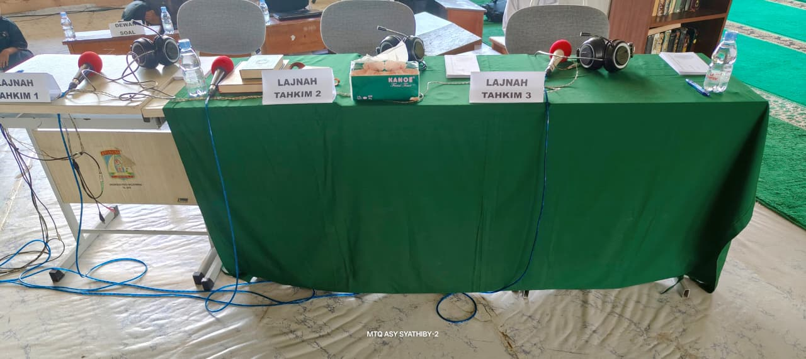
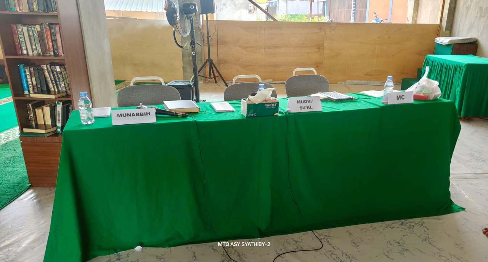
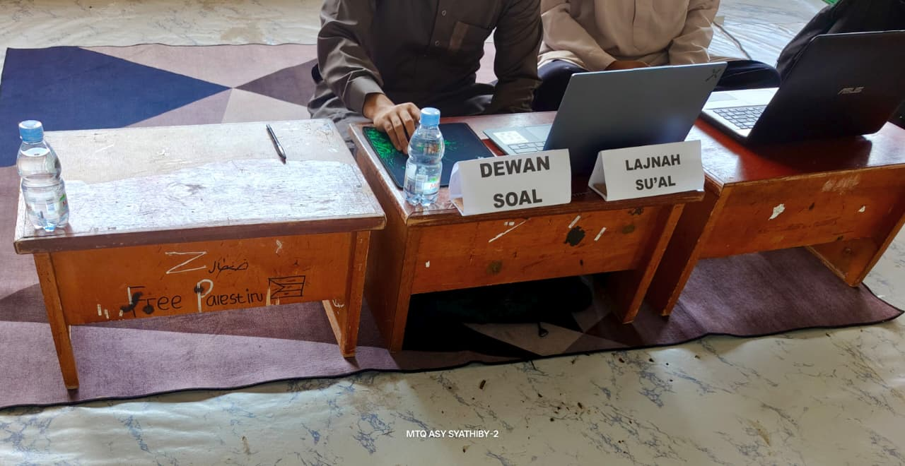

بسم الله الرحمن الرحيم
Alhamdulillāh, Musabaqah Al-Qur'an Al-Imam Asy-Syathiby ke-2 Se-Borneo telah terlaksana pada tanggal 16–18 Oktober 2026 di Masjid Al-Anshar, Rumah Tahfizhul Qur'an Al-Imam Adz-Dzahabiy, Balikpapan. Kegiatan ini diikuti oleh para peserta dari berbagai lembaga tarbiyah Ahlus Sunnah wal Jama'ah di wilayah Kalimantan, dengan dua golongan perlombaan, yaitu hafalan 5 juz dan 10 juz.
Musabaqah ini bukan semata-mata ajang perlombaan untuk meraih peringkat, melainkan sarana menumbuhkan kecintaan terhadap Al-Qur'anul Karim, memotivasi para santri agar menjaga hafalan, serta mendorong mereka untuk mempelajari dan mengamalkan kandungannya.
Pembukaan Diawali dengan Taushiyah dan Nasihat
Rangkaian kegiatan diawali dengan taushiyah dan nasihat dari Al-Ustadz Abdul Haq, selaku Mudir Rumah Tahfizhul Qur'an Al-Imam Adz-Dzahabiy. Beliau mengingatkan bahwa musabaqah bukanlah ajang untuk saling unggul, membanggakan diri, merendahkan peserta lain, atau mengunggulkan lembaga masing-masing.
Yang dituntut dari kegiatan ini adalah memupuk dan menumbuhkan generasi muda kaum muslimin secara umum, dan Salafiyyin Ahlus Sunnah secara khusus, kecintaan kepada Al-Qur'anul Karim, demikian pula semangat untuk mempelajari dan mengamalkannya.
Membaca Al-Qur'an, menghafalnya, dan mengulang-ulang hafalan merupakan amalan yang mulia. Karena itu, setiap peserta hendaknya menjaga amalannya dari sifat ujub, sombong, dan keinginan untuk dipuji. Hasil perlombaan tidak semestinya menjadi ukuran utama keberhasilan seseorang dalam berinteraksi dengan Al-Qur'an.
Al-Qur'an diturunkan bukan sekadar untuk dibaca, meskipun membacanya adalah ibadah. Al-Qur'an juga harus dipelajari, dikaji, dipahami, dan diamalkan dalam kehidupan sehari-hari. Peserta yang memperoleh peringkat maupun yang belum mendapatkan nominasi hendaknya tetap bersemangat menjaga hafalan dan meningkatkan amalannya.
Dengarkan penjelasan lengkap Al-Ustadz Abdul Haq melalui kanal Telegram resmi Musabaqah.
Simak taushiyah beliauPeserta dan Nomor Urut Penampilan
Peserta mengikuti perlombaan dalam dua golongan. Pada golongan 5 juz, maqra mencakup Juz 26–30, sedangkan golongan 10 juz mencakup Juz 21–30. Nomor urut penampilan ditetapkan oleh panitia untuk membantu kelancaran pelaksanaan musabaqah.
Golongan 5 Juz — Juz 26–30
- Tholhah bin Suandi — Ibnul Mubarok, Samarinda
- (Tidak hadir)
- Humaid bin Harminto — Al-Manshurah, Banjarbaru
- Salim bin Abdul Malik — Ibnul Mubarok, Samarinda
- Adnan Abqary bin Ahmad Ratu Alam — Rumah Tahfizhul Qur'an Al-Imam Adz-Dzahabiy, Balikpapan
- Ibrohim bin Sutrisno — Al-Manshurah, Tabalong
- Ibrahim Abdillah bin Anang Kadarsah — Al-Manshurah, Banjarbaru
- Zaid Ali Ashshidiq bin Muhammad Aliansyah AHB — Ibnu Katsir, Sangatta
- Muawiyah Abdullah bin Ihsan Gusti — Darussalaf Al Islamy, Kutai Timur
- Ibrohim Khoirul Azzam bin Achmad Jamil — Ibnu Katsir, Sangatta
- Abdul Bari bin Mambang Sugiarto — Darussalaf Al Islamy, Kutai Timur
- Umar bin Zaenal Fanani — Rumah Tahfizhul Qur'an Al-Imam Adz-Dzahabiy, Balikpapan
- Abdullah Azzam bin Askar — Baitul Ilmi, Bontang
- Hisyam Luthfi Rianto bin Khoirudin Febrianto — Al-Manshurah, Tabalong
- Abdullah Zein bin Abdul Syahid — Imam Nawawi, Tenggarong
Golongan 10 Juz — Juz 21–30
- Zubair bin Syamsuardi — As-Sunnah, Long Kali
- Yayi Abimanyu (Uqbah) bin Faizal — Ibnul Mubarok, Samarinda
- Muhammad Thoriq bin Muhammad Sadar — Darussalaf Al Islamy, Kutai Timur
- Muhammad bin Adi Rakhman Said — Rumah Tahfizhul Qur'an Al-Imam Adz-Dzahabiy, Balikpapan
- Sa'ad Nashirul Haq bin Nur Jihad — Ibnu Katsir, Sangatta
- Abdullah bin Muhammad Fahmi — Rumah Tahfizhul Qur'an Al-Imam Adz-Dzahabiy, Balikpapan
- Abdullah Al-Harits bin Abdul Syahid — Imam Nawawi, Tenggarong
- Ikhlasul Mudzaki bin Surono — As-Sunnah, Long Kali
- Muhammad Nuh bin Dhenny Pratomo — Darussalaf Al Islamy, Kutai Timur
- Dzulklifli Argadinata bin Abdul Malik — Ibnu Katsir, Sangatta
- Harits Abdullah bin Mustaqim — Ibnul Mubarok, Samarinda
Perjalanan Musabaqah
Rangkaian pelaksanaan Musabaqah Al-Qur'an Al-Imam Asy-Syathiby ke-2 Se-Borneo.
Penyisihan 5 Juz
Golongan Juz 26–30

Dokumentasi KegiatanBabak Penyisihan
Para peserta golongan 5 juz mengikuti babak penyisihan untuk menunjukkan kemampuan hafalan Al-Qur'an sesuai maqra yang ditentukan.
Dari 14 peserta, terpilih 5 peserta untuk melanjutkan ke babak final, yaitu:
- Tholhah bin Suandi Ibnul Mubarok, Samarinda
- Abdul Bari bin Mambang Sugiarto rahimahullah Darussalaf Al Islamy, Kutai Timur
- Ibrohim Khoirul Azzam bin Achmad Jamil Ibnu Katsir, Sangatta
- Adnan Abqary bin Ahmad Ratu Alam RTQ Al-Imam Adz-Dzahabiy, Balikpapan
- Umar bin Zaenal Fanani RTQ Al-Imam Adz-Dzahabiy, Balikpapan
Penyisihan 10 Juz
Golongan Juz 21–30

Dokumentasi KegiatanBabak Penyisihan
Babak penyisihan golongan 10 juz dilaksanakan untuk menilai kualitas hafalan dan bacaan para peserta pada juz yang diperlombakan.
Dari 11 peserta, terpilih 5 peserta untuk melanjutkan ke babak final, yaitu:
- Muhammad bin Adi Rakhman Said RTQ Al-Imam Adz-Dzahabiy, Balikpapan
- Abdullah Al-Harits bin Abdul Syahid Imam Nawawi, Tenggarong
- Harits Abdullah bin Mustaqim Ibnul Mubarok, Samarinda
- Abdullah bin Muhammad Fahmi RTQ Al-Imam Adz-Dzahabiy, Balikpapan
- Muhammad Nuh bin Dhenny Pratomo Darussalaf Al Islamy, Kutai Timur
Final 5 Juz
Golongan Juz 26–30
 Dokumentasi Kegiatan
Dokumentasi Kegiatan
Babak Final
Peserta yang melanjutkan ke babak final golongan 5 juz kembali tampil dalam tahap penentuan hasil akhir musabaqah.
Final 10 Juz
Golongan Juz 21–30

Dokumentasi KegiatanBabak Final
Final golongan 10 juz menjadi tahap lanjutan untuk menentukan hasil akhir para peserta pada golongan tersebut.
Pengumuman Pemenang
Apresiasi bagi para peserta
 Dokumentasi Kegiatan
Dokumentasi Kegiatan
Pengumuman Hasil Musabaqah
Rangkaian musabaqah ditutup dengan pengumuman hasil perlombaan dan apresiasi kepada para peserta yang meraih juara maupun harapan.
Lihat Daftar PemenangPengumuman Juara
Musabaqah Al-Imam Asy-Syathiby ke-2 Se-Borneo
Golongan 5 Juz
Juz 26–30
Golongan 10 Juz
Juz 21–30

Barakallahu fiikum. Semoga Allah memberkahi para peserta, menjaga hafalan mereka, serta menjadikan Al-Qur'an sebagai petunjuk dan amalan dalam kehidupan.
Apresiasi dan Terima Kasih kepada Dewan Juri
Tak lupa kami menyampaikan jazaakumullahu khoiron kepada seluruh dewan juri yang telah meluangkan waktu, mencurahkan ilmu, dan memberikan penilaian dalam Musabaqah Al-Qur'an Al-Imam Asy-Syathiby ke-2 Se-Borneo.




Daftar Dewan Juri
-
Al-Ustadz Zulfa Hanif Darussalaf Al Islamy, Kutai Timur
-
Al-Ustadz Achmad Masduki Nuroini Darussalaf Al Islamy, Kutai Timur
-
Al-Ustadz Umar As Salafi Ibnul Mubarok, Samarinda
-
Al-Ustadz Mohamad Yusuf Ibnul Mubarok, Samarinda
-
Al-Ustadz Sapriadi Lesmana (Abu Dawud) Ibnul Mubarok, Samarinda
-
Al-Ustadz Muhamad Taufiq Darussalaf Al Islamy, Kutai Timur
-
Al-Ustadz Ashadi Ibnu Katsir, Sangatta
-
Al-Ustadz Ammar Mu’tashim Atha Viemah Ibnu Katsir, Sangatta
-
Al-Ustadz Abdulloh Darussalaf Al Islamy, Kutai Timur
-
Al-Ustadz Umar Al Faruq Ibnu Katsir, Sangatta
-
Al-Ustadz Ali bin Mulyanto Rumah Tahfizhul Qur'an Al-Imam Adz-Dzahabiy
-
Al-Ustadz Muhammad Rumah Tahfizhul Qur'an Al-Imam Adz-Dzahabiy
Ucapan jazakumullahu khoiron ini juga diiringi doa terbaik. Semoga Allah Subhanahu wa Ta'ala membalas segala waktu, ilmu, dan bimbingan yang telah diberikan kepada para peserta. Semoga Allah memberkahi para ustadz, menjaga mereka dalam kebaikan, serta menjadikan bimbingan yang diberikan sebagai sebab semakin baiknya bacaan, hafalan, dan pengamalan Al-Qur'an para peserta pada masa mendatang.
Jazakumullahu khairan wa barakallahu fikum.Menjaga Semangat Setelah Musabaqah
Musabaqah bukanlah akhir dari perjalanan seorang penghafal Al-Qur'an. Setelah perlombaan selesai, semangat membaca, menghafal, muraja'ah, mempelajari, dan mengamalkan Al-Qur'an hendaknya terus dijaga. Peringkat dan penghargaan merupakan bagian dari kegiatan, sedangkan kecintaan kepada Al-Qur'an dan kesungguhan mengamalkannya adalah perkara yang jauh lebih penting.
Semoga Allah Subhanahu wa Ta'ala memberkahi seluruh peserta, para asatidzah, muhsinin, orang tua, panitia, dan lembaga yang telah berpartisipasi. Semoga kegiatan ini menjadi sarana menumbuhkan generasi Ahlul Qur'an yang istiqamah, berakhlak mulia, serta membawa manfaat bagi umat.
Jazākumullāhu khairan kepada seluruh pihak yang telah berkontribusi dalam terselenggaranya Musabaqah Al-Qur'an Al-Imam Asy-Syathiby ke-2 Se-Borneo.
وَبَارَكَ اللَّهُ فِيكُمْ
Apresiasi Khusus untuk Mahad dengan Nilai Terbanyak
Sebagai bentuk apresiasi, panitia telah menyediakan hadiah khusus bagi mahad yang para perwakilannya memperoleh akumulasi nilai terbanyak dalam Musabaqah Al-Qur'an Al-Imam Asy-Syathiby ke-2 Se-Borneo.
Alhamdulillah, perolehan nilai terbanyak diraih oleh Rumah Tahfizhul Qur'an Al-Imam Adz-Dzahabiy, Balikpapan.

Semoga Allah memberkahi para santri, para mudarris, dan seluruh pihak yang telah berkontribusi dalam menumbuhkan kecintaan terhadap Al-Qur'an serta semangat untuk menghafal dan mengamalkannya.